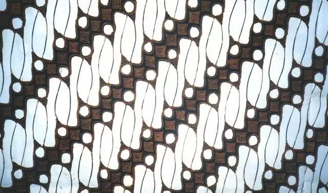

Batik Jogjakarta adalah gaya batik khas yang berasal dari Yogyakarta, Indonesia. Batik ini terkenal karena motifnya yang khas, dengan penggunaan warna-warna cerah dan motif geometris atau floral yang rumit. Batik Jogja sering menggunakan teknik pewarnaan tradisional, seperti "canting" (alat untuk menerapkan lilin panas ke kain) untuk membuat motifnya yang unik.
Batik Jogja memiliki ciri khas yang membuatnya istimewa, yaitu:
1. Motifnya yang Khas: Batik Jogja memiliki beragam motif yang mencerminkan kekayaan budaya dan tradisi Jawa. Motif-motifnya seringkali kompleks dan simbolis, terinspirasi dari alam, tumbuhan, binatang, mitologi, serta simbol-simbol kehidupan sehari-hari.
2. Penggunaan Warna Cerah : Warna-warna yang digunakan dalam Batik Jogja seringkali cerah dan menarik. Kombinasi warna yang berani dan cerah menambah keindahan pada kain batiknya.
3. Pewarnaan Tradisional : Proses pembuatan Batik Jogja melibatkan teknik pewarnaan yang tradisional. Proses ini melibatkan penggunaan lilin panas yang diterapkan pada kain menggunakan alat bernama canting. Lilin ini bertindak sebagai penghalang untuk mencegah pewarnaan pada bagian tertentu dari kain.
4. Nilai Budaya dan Sejarah : Batik Jogja sering kali memuat simbol-simbol yang memiliki makna mendalam, seperti kepercayaan, filosofi hidup, kebudayaan, dan sejarah Jawa.
5. Kebudayaan dan Identitas : Batik Jogja bukan hanya sekadar kain, tetapi juga mewakili identitas budaya masyarakat Yogyakarta dan menjadi bagian yang penting dalam upaya mempertahankan warisan budaya Indonesia.
6. Penggunaan dalam Mode : Selain sebagai kain tradisional, Batik Jogja juga banyak digunakan dalam desain pakaian modern. Batik ini sering diaplikasikan dalam busana seperti kebaya, kemeja, gaun, atau aksesoris fashion lainnya, yang membuatnya tetap relevan dalam dunia mode saat ini.
Batik Jogja merupakan warisan budaya yang sangat berharga bagi Indonesia, tidak hanya karena keindahannya tetapi juga karena makna budaya yang tersemat dalam setiap motif dan proses pembuatannya.